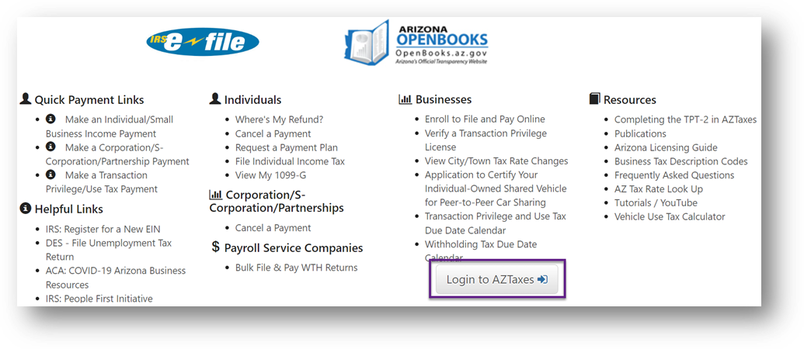

Dive into Arizona's Transaction Privilege Tax (TPT). Perfect for business owners, it covers the basics from getting a TPT license to filing your taxes. Learn the essentials, avoid penalties, and streamline your tax process with our helpful insights. Get started and keep your business thriving in Arizona!

The Arizona sales tax is known as Transaction privilege tax (TPT). TPT is a tax on a vendor for the privilege of doing business in the state of Arizona. If your business sells products or provides services subject to TPT, you are responsible for paying the taxes on your applicable gross receipts. Authorization to do business and be able to pay the tax, requires a license administered by the Arizona Department of Revenue (ADOR) . ADOR collects the tax for the counties and cities. Tax rates vary depending on the type of business activity, the city, and the county.
The tax payments required by TPT may be passed on to your customer. An Arizona Resale Certificate, Form 5000A , must be provided to your vendors which allows them to defer the responsibility of the sales tax to your business. It is now your responsibility to manage the sales taxes and remain in compliance with state and local laws. Not staying in compliance may lead to penalties and interest charges.
For further guidance, refer to ADOR for TPT Tutorials, TPT Notices and Correspondence Resource Center, and TPT Forms.
What you'll learn...
In Latin, nexus nexus means "to bind or tie." Nexus describes the connection a business has to Arizona. It decides whether the state has the authority to require your business to file and pay TPT.
Arizona nexus is triggered when your business has a physical presence in the state or a virtual connection to the state such as out-of-state sellers.
To register for a license, go to AZTaxes.gov. Select Login to AZTaxes.
On the Business User Login page, select New User Enrollment.
The welcome page displays information regarding your registration. Select Continue to begin your registration.
ADOR will require information about your business (including but not limited to):
Remember that TPT is a two-step process. You must first file a return to notify ADOR of the current period's tax liability and then you must pay the liability.
Follow the step-by-step instructions provided by ADOR.
ADOR allows individuals to file paper returns if their annual tax liability is $500 or less. ADOR strongly encourage all taxpayers to file and pay using the online tax system for fast and efficient processing.
ADOR assigns filing frequencies determined by the amount of a business' total estimated annual combined Arizona, county and municipal TPT liability.
If you have no TPT due for the filing period, you must still file a return. When filing through AZTaxes.gov, select “No Gross Receipt to Report.”
ADOR provides the filing due dates for all filing frequencies.
 Horacio Bermudez
Horacio Bermudez